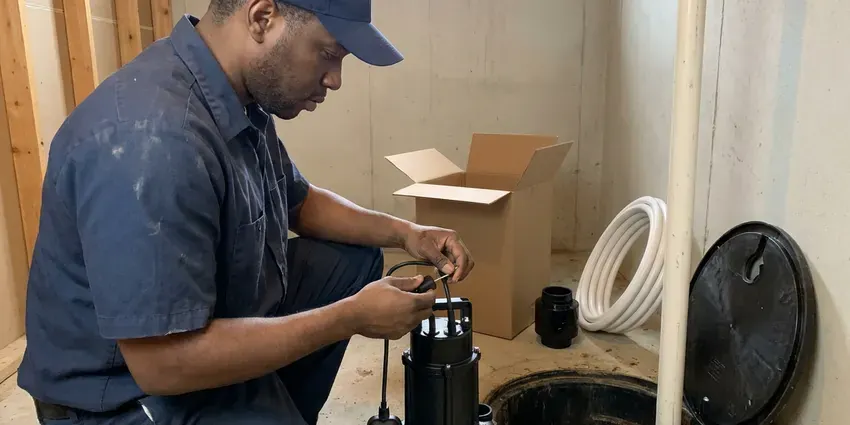
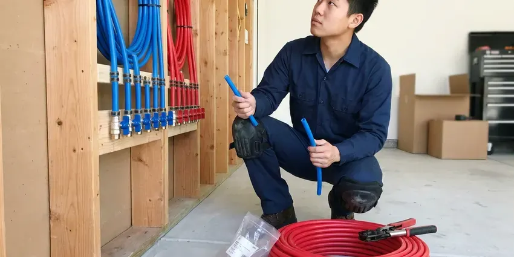

Plumbing Installation in Cross Lanes, WV
When it's time for new plumbing, GJK Plumbing offers expert installation services across Cross Lanes, WV for homes and businesses.
- Same-Day Equipment Installs
- Upfront Written Pricing
- Expert, Certified Plumbers
- Local Cross Lanes Experts
Professional Plumbing Installation Services in Cross Lanes, WV.
Call GJK Plumbing today for a free estimate on your plumbing installation project.
Complete Plumbing Installation Services for Homes in Cross Lanes, WV
GJK Plumbing installs the equipment and piping that keep your home supplied with clean, hot water and safe gas. That includes tank and tankless water heaters, water softeners, PEX repipes, water service lines, gas lines and backflow prevention devices.
Our expertise includes:
- Sump pump and sewage ejector setups
- Sump pump and sewage ejector pump installations.
- Water softener loops, PEX repiping and new water service lines

Additional Plumbing Installation Services in Cross Lanes, WV
We install water heaters, pumps, lines, and fixtures across Cross Lanes, WV with careful, permitted work that passes inspection the first time.


Cross Lanes sump pump installation specialists


Customers
Why Choose GJK Plumbing for Plumbing Installation in Cross Lanes, WV?
Plumbing equipment is only as reliable as the installation behind it. Poor venting, missing expansion tanks or undersized gas lines can shorten equipment life and create safety hazards.
- Code Compliant, Every installation meets local plumbing, gas and mechanical code rules.
- Customer Satisfaction, We prioritize clear communication and clean work areas, ensuring a smooth experience.
- Local Expertise, Our team understands the particular plumbing challenges and codes in Cross Lanes, WV.
Citywide Coverage
From garage water heater swaps to whole-home repipes, we serve every part of Cross Lanes. Our scheduling team works to fit installs around your plans.
Experienced Team
Our plumbers install water heaters, softeners and gas lines every week. They know the common layouts in local homes and how to plan installs that are easy to service later.
Safety-First Approach
We pull permits when required and schedule inspections so your installation meets code. Backflow devices are installed and tested to protect the public water supply.
Trusted Certified Cross Lanes Plumbing Services Professionals
At GJK Plumbing, we take pride in providing licensed, certified plumbing services throughout Cross Lanes, WV. Backed by leading industry credentials, our experienced plumbers combine technical skill with genuine customer care. Whether it is repair, installation, or maintenance, we follow strict safety and quality standards to deliver lasting results you can trust.
Call Us Now PHCC Plumbing Contractor Recognition
PHCC Plumbing Contractor Recognition Better Business Bureau (BBB) Accreditation
Better Business Bureau (BBB) Accreditation Angi Certified Pro
Angi Certified Pro ISO 9001 Quality Management Certification
ISO 9001 Quality Management CertificationDependable Plumbing Installation Services in Cross Lanes, WV
Gas Line Installation in Cross Lanes, WV
Whether you are adding a new gas appliance, converting to natural gas, or need a new line run for an outdoor kitchen, GJK Plumbing provides safe and compliant gas line installation in Cross Lanes, WV. Our licensed technicians handle everything from sizing the line to trenching, ensuring all connections are leak-free and meet strict local codes. Gas line work requires specialized tools and expertise to prevent dangerous leaks, making professional installation a must for the safety of your home.

Water Line Installation in Cross Lanes
Whether you're replacing old, corroded galvanized pipes or installing new water lines for an addition, GJK Plumbing has you covered. We work with various materials like PEX and copper, ensuring durable, leak-free connections. Hard water can lead to mineral buildup, making proper pipe selection and installation crucial for longevity. Water hardness in West Virginia ranges from moderate to hard in many areas, and mineral scale is a common issue for water heaters and fixtures. We handle everything from the main water service line into your home to individual fixture supply lines, adhering to all local regulations for trenching, backfilling, and pressure testing.
PEX Pipe Installation and Repiping in Cross Lanes
PEX is flexible, resistant to scale and a popular choice for repiping older homes with failing copper or galvanized pipe. We install PEX with manifold or home-run layouts for balanced pressure. The material handles hard water well and can reduce noise in the walls. We patch access openings neatly or coordinate with your drywall contractor. A PEX repipe can stop repeat pinhole leaks.
Sump Pump Installation in Cross Lanes, WV
Protecting your basement from flooding is essential in Cross Lanes, WV, especially during heavy rainfalls. GJK Plumbing provides professional sump pump installation, including primary and battery-backup systems. We evaluate your basement's water intrusion risks, soil conditions, and foundation type to recommend the right pump capacity and discharge setup. Proper pit excavation, check valve installation, and discharge line routing away from your foundation are key steps we manage carefully. Our team ensures your new sump pump is ready to handle any excess water, preventing costly damage.
Water Line Installation and Replacement in Cross Lanes
From replacing old, corroded pipes to installing new water lines for additions or renovations, GJK Plumbing provides comprehensive water line installation in Cross Lanes. We work with various materials, including PEX and copper, ensuring durable, leak-free connections. Shale and clay soils can hold water and shift over time, which can crack sewer lines and push water into basements. We use bedding and burial techniques that minimize future issues with buried lines. We also make sure proper pressure regulation and backflow prevention devices are installed where needed to protect your potable water supply.
Electric Tankless Water Heater Installation in Cross Lanes, WV
For endless hot water on demand and energy savings, consider an electric tankless water heater installation from GJK Plumbing in Cross Lanes, WV. These compact units heat water only as needed, cutting out standby heat loss. While they require significant electrical capacity, our electricians work alongside our plumbers to ensure your home's electrical panel can handle the load. We handle all plumbing connections, ensuring proper flow rates and temperature settings for consistent hot water.
PEX Pipe Installation in Cross Lanes, WV
PEX piping has become a popular choice for new plumbing installations and repipes in Cross Lanes, WV due to its flexibility, durability, and resistance to corrosion. GJK Plumbing installs PEX piping for water supply lines, offering a cost-effective and long-lasting alternative to copper. Its ability to expand makes it more resistant to freeze damage than rigid pipe. Higher elevations see colder and longer freezes, so pipe insulation, heat tape and frost-free spigots are common precautions. We make sure all connections are secure and leak-free.

Sewage Ejector Pump Installation in Cross Lanes, WV
When plumbing fixtures are located below the main sewer line, such as in a basement bathroom or laundry room, a sewage ejector pump is needed. GJK Plumbing provides professional sewage ejector pump installation in Cross Lanes, WV. We confirm correct sizing of the pump and basin, proper venting, and secure discharge line connection to the main sewer. This complex installation requires specialized knowledge to prevent backups and ensure reliable waste removal. We use durable pumps from trusted brands like Liberty Pumps or Zoeller to guarantee long-term performance.
Plumbing Installation Near Me in Cross Lanes, WV
Homeowners looking for plumbing installation near me can count on our local team for fast scheduling. We stock common water heaters, softener parts and fittings on our trucks. That means fewer delays and faster installs.
When you search for "plumbing installation near me" in Cross Lanes, WV, GJK Plumbing is your trusted local expert. We are very familiar with the plumbing infrastructure across the area, allowing us to provide quick and efficient service. Our local presence means we can often offer same-day or next-day appointments for your installation project.
GJK Plumbing at a Glance
- Fully licensed plumbing team covering Cross Lanes, WV
- Same-day appointments and 24/7 emergency response
- Upfront, flat-rate pricing before work begins
- 4.8-star rated by 832+ West Virginia customers
Cross Lanes Map
Cross Lanes Information
- Population
- 9,727
- Area codes
- Local
- Service area
- Cross Lanes and communities within 40 miles
- Nearby
- Nitro, St. Albans, Dunbar, South Charleston
Local water and ground conditions put real demands on plumbing equipment, so proper installation matters for homes in Cross Lanes, WV. Water hardness in West Virginia ranges from moderate to hard in many areas, and mineral scale is a common issue for water heaters and fixtures. Shale and clay soils can hold water and move over time, which can crack sewer lines and push water into basements.
Expert Services
Trust our professionals for reliable GJK Plumbing solutions in Cross Lanes, WV.
Our Specialized Plumbing Services in Cross Lanes, WV
At GJK Plumbing, we provide a complete range of plumbing services across Cross Lanes, WV. From leak detection to full system installations, our team ensures fast, precise, and affordable service for both residential and commercial properties. Explore our core services below:


How Our Plumbing Installation Process Works in Cross Lanes, WV
Here is what to expect when you book a plumbing installation with our team.
Request a Quote
Contact us at (681) 223-3607 to schedule an on-site consultation for your plumbing installation project. We will discuss your needs and provide a detailed, transparent estimate.
Site Assessment
Our expert plumbers will visit your Cross Lanes property to assess the site, confirm measurements, and finalize the scope of work. This allows accurate planning and material selection.
Professional Installation
We will perform the installation with precision, adhering to all local codes and using quality materials. Our team works quickly, minimizing disruption to your home.
Frequently Asked Questions About Plumbing Installation in Cross Lanes
Costs depend on the project. A standard tank water heater install typically runs $1,600 to $3,500, a water softener $1,500 to $4,000, and a whole-home PEX repipe $5,000 to $15,000 or more depending on home size.
While some minor fixture replacements might seem simple, complex installations like water heaters, gas lines, or repiping should always be handled by a licensed professional. Improper installation can lead to leaks, gas hazards, water damage, and code violations, which can be costly and dangerous. GJK Plumbing delivers safe, compliant work.
Tank water heaters cost less upfront, while tankless units offer endless hot water and can last longer. We help you compare based on household size, fuel type and budget.
GJK Plumbing stands behind our work with solid warranties on both labor and installed materials. The specific warranty period varies by service and product, but we always make sure you receive manufacturer warranties on equipment. We are committed to resolving any issues that may arise post-installation.
Installing a water heater or gas line yourself is highly discouraged due to safety risks and code complexities. Improper installation can lead to gas leaks, carbon monoxide poisoning, explosions, or severe water damage. These jobs should always be performed by licensed and experienced plumbers, like those at GJK Plumbing, to ensure safety and compliance.
PEX (cross-linked polyethylene) is a flexible plastic tubing used for water supply lines. It's popular for installations in Cross Lanes because it's corrosion-resistant, less prone to bursting from freezing than copper, and often quicker to install. Its flexibility allows for fewer fittings, reducing potential leak points and making it a durable choice for West Virginia homes.
A water heater or softener install usually takes a few hours. Gas line runs and water line replacements can take a day, while whole-home repipes may take several days.
Yes, we install rough-in and finish plumbing for additions, remodels and light commercial projects. We coordinate with your builder or contractor.
What People Are Saying About Our Plumbing Experts?

Patricia H.
We had a slab leak that two other companies could not find. GJK Plumbing located it in under an hour, explained our options, and the price matched the quote to the dollar.
Slab Leak Repair · Nitro, WV
James P.
Our commercial plumbing system had a leak under the sink, and GJK Plumbing handled it professionally. The plumbers arrived quickly and restored everything without disruption to our customers.
Commercial Plumbing · Charleston, WV
Laura S.
I scheduled a water heater replacement, and the team made the process smooth and affordable. The new unit works perfectly, and they cleaned up after completing the job.
Water Heater Replacement · Cross Lanes, WV
Daniel K.
A pipe burst at 11 pm and they actually answered. The plumber showed up within the hour, shut everything down, and had us back to normal the next morning. Could not ask for more.
Emergency Plumbing · Dunbar, WV
Mark T.
When our office needed drain cleaning, GJK Plumbing provided quick, reliable service. The plumber arrived on time and made sure every drain flowed perfectly before leaving. Very satisfied.
Drain Cleaning · Cross Lanes, WVRobert G.
The trenchless sewer replacement saved our front yard. They walked us through the camera inspection footage first so we knew exactly what we were paying for.
Sewer Line Replacement · Teays Valley, WV